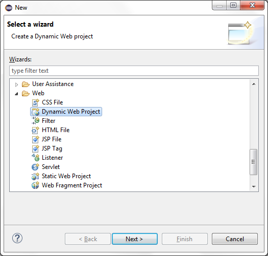
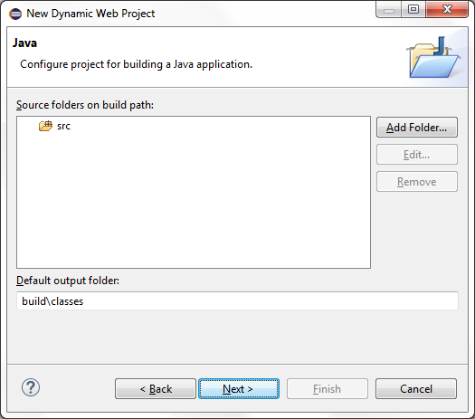
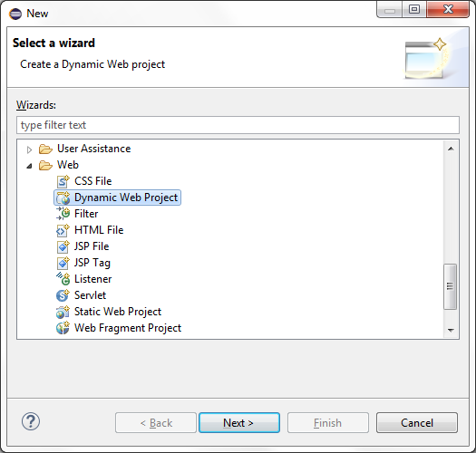
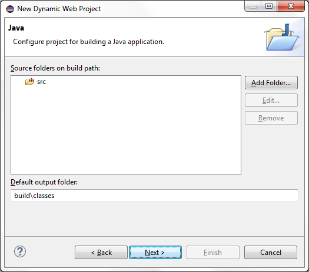

Project Facet
The Project Facet is used to enrich an Eclipse dynamic web project by adding all required JDistil framework resources.
This also enables the Application Fragment and Fragment Relationship wizards which support domain model
based code generation. The next section provides a walk-through of the steps needed to include the Project Facet
and the final section documents all framework specific resources included in an application created using the
Project Facet.
Project Creation
Select the new resource wizard and choose the Dynamic Web Project wizard.

Specify a project name and then select the "Modify" button to change the configuration.
Select the JDistil Project facet checkbox and then select the "OK" button to close the dialog.
Select the "Next" button after modifying the Java application settings.

Select the "Next" button after modifying the Web Module settings.
Specify the base package name and select the "Finish" button to create the project.

Specify a project name and then select the "Modify" button to change the configuration.
Select the JDistil Project facet checkbox and then select the "OK" button to close the dialog.
Select the "Next" button after modifying the Java application settings.

Select the "Next" button after modifying the Web Module settings.
Specify the base package name and select the "Finish" button to create the project.
Project Resources
The following table documents the project specific resources generated by the project facet.
| Directory | Resource | Description |
|---|---|---|
| src | <base-package>.configuration.ActionIds | Class containing constant values representing application specific action IDs. |
| src | <base-package>.configuration.AttributeNames | Class containing constant values representing application specific attribute names. These are used to store and retrieve data from HTTP request attributes. |
| src | <base-package>.configuration.CategoryIds | Class containing constant values representing application specific category IDs. These serve to classify a group of code lookup values. |
| src | <base-package>.configuration.Configuration | Implementation of the application specific configuration. Used to aggregate lower level fragment specific configurations. |
| src | <base-package>.configuration.Constants | Class containing constant values representing custom application specific constant values. |
| src | <base-package>.configuration.FieldIds | Class containing constant values representing application specific field IDs. |
| src | <base-package>.configuration.PageIds | Class containing constant values representing application specific page IDs. |
| properties | core_en_US.properties | Application specific properties file. |
| sql | core.txt | File containing SQL statements used to create tables and relationships supporting the Core framework. |
| sql | codes.txt | File containing SQL statements used to create tables and relationships supporting the Codes module. |
| sql | security.txt | File containing SQL statements used to create tables and relationships supporting the Security module. |
| sql | permission.txt | File containing SQL statements used to populate security entitlements supporting the Codes and Security modules. |
| sql | app-category.txt | File containing SQL statements used to populate code lookup categories. |
| sql | app-entity.txt | File containing SQL statements used to create tables and relationships supporting application specific fragments. |
| sql | app-security.txt | File containing SQL statements used to populate security entitlements supporting application specific fragments. |
| WebContent | core.css | Core framework stylesheet. |
| WebContent | core.js | Core framework javascript library. |
| WebContent | Home.jsp | Default home page for applications created using the Plug-in. |
| WebContent | Header.jsp | Default header page included in each application page. |
| WebContent/WEB-INF | web.xml | Web application configuration file where the framework servlet and welcome file are configured. |
| WebContent/WEB-INF/lib | core.jar | Core framework library. |
| WebContent/WEB-INF/lib | codes.jar | Codes module library. |
| WebContent/WEB-INF/lib | codes-app.jar | Codes module library supporting the code management application. |
| WebContent/WEB-INF/lib | security.jar | Security module library. |
| WebContent/WEB-INF/lib | security-app.jar | Security module library supporting the security management application. |
| WebContent/WEB-INF/lib | core.jar | JDistil framework core library. |